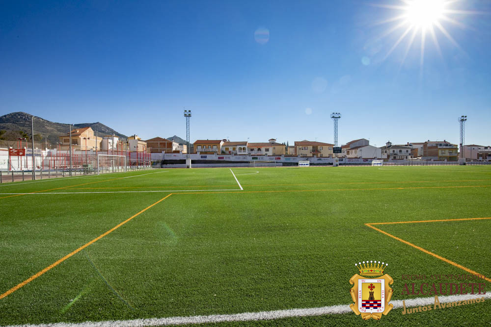

Este es un deporte de equipo jugado entre dos conjuntos de once jugadores, se considera el deporte más popular del mundo, pues lo practican alrededor de 270 millones de personas en el planeta. Existen torneo importantes como el Torneo Mundial de Fútbol de Mayores, que se considera el más visto y seguido, así como también Campeonatos Mundiales en las categorías Sub17, Sub20 en ambos géneros y el Campeonato Mundial Femenino de Mayores.
Tenemos el espacio requerido y con profesores profesionales se dan entrenos y también hay muchas actividades las Instalaciones estan en buen estado y con un buen mantenimiento, aqui puedes tu venir a disfrutar.
